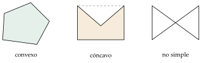
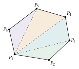
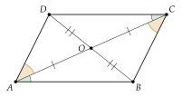

Con la congruencia de triángulos y el postulado de las paralelas ya tenemos las herramientas para estudiar figuras con más lados. En este capítulo definimos los polígonos, calculamos la suma de sus ángulos y estudiamos con detalle los cuadriláteros notables: paralelogramos, trapecios, rectángulos, rombos y cuadrados. Terminamos con el teorema de la base media, una de las herramientas más útiles del curso, y con el baricentro de un triángulo.
Sean P1,P2,…,Pn, con n≥3, puntos de un plano tales que tres consecutivos (contando Pn−1,Pn,P1 y Pn,P1,P2) no son colineales. La unión de los segmentos P1P2,P2P3,…,Pn−1Pn,PnP1 es un polígono de n lados, que denotamos P1P2⋯Pn. Los puntos Pi son sus vértices y los segmentos son sus lados. El polígono es simple si dos lados no consecutivos no se cortan y dos lados consecutivos solo comparten su vértice común.
Un polígono simple es convexo si, para cada lado, todos los demás vértices están del mismo lado de la recta que contiene a ese lado. Si no, es cóncavo.

Los polígonos reciben nombres según su número de lados: triángulo (3), cuadrilátero (4), pentágono (5), hexágono (6), heptágono (7), octágono (8), eneágono (9), decágono (10), dodecágono (12). Un polígono es equilátero si todos sus lados son congruentes, equiángulo si todos sus ángulos son congruentes y regular si es convexo, equilátero y equiángulo.
Una diagonal es un segmento que une dos vértices no consecutivos. En un polígono convexo, el ángulo interior en el vértice Pi es ∠Pi−1PiPi+1, y un ángulo exterior en Pi es el que forma un par lineal con el interior.
Un polígono de n lados tiene 2n(n−3) diagonales.
Desde cada vértice salen diagonales a todos los vértices excepto a él mismo y a sus dos vecinos: n−3 diagonales. Al contar n(n−3) cada diagonal se cuenta dos veces, una desde cada extremo.
La suma de los ángulos interiores de un polígono convexo de n lados es (n−2)⋅180∘, y la suma de sus ángulos exteriores (uno por vértice) es 360∘.
Las diagonales trazadas desde P1 dividen el polígono en n−2 triángulos: P1P2P3, P1P3P4, …, P1Pn−1Pn.

Como el polígono es convexo, cada diagonal P1Pk está en el interior del ángulo ∠Pk−1PkPk+1 y del ángulo en P1 (teorema de la barra transversal), así que por el postulado de adición los ángulos de los triángulos llenan exactamente los ángulos del polígono.
La suma es (n−2)⋅180∘.
Para los exteriores: en cada vértice, interior más exterior es 180∘; sumando sobre los n vértices, Sint+Sext=180∘n, y Sext=180∘n−(n−2)180∘=360∘.
Cambie el número de lados: el polígono se parte en n − 2 triángulos.
Cada ángulo interior de un polígono regular de n lados mide n(n−2)180∘ y cada ángulo exterior mide n360∘.
¿Cuántos lados tiene un polígono regular cuyo ángulo interior mide 150∘? El exterior mide 30∘, luego n360=30 y n=12: es un dodecágono. ¿Y uno cuyo ángulo interior mida 100∘? Tendríamos n360=80, n=4,5, que no es entero: no existe.
En un cuadrilátero ABCD, los lados AB y CD son opuestos, igual que BC y DA; los ángulos ∠A y ∠C son opuestos, igual que ∠B y ∠D. Por el Teorema 4.1.5, la suma de los ángulos de un cuadrilátero convexo es 360∘.
Un paralelogramo es un cuadrilátero cuyos lados opuestos son paralelos.
En todo paralelogramo ABCD:
cada diagonal lo divide en dos triángulos congruentes;
los lados opuestos son congruentes;
los ángulos opuestos son congruentes y los consecutivos son suplementarios;
las diagonales se bisecan (se cortan en su punto medio).
(i) Consideremos la diagonal AC. Como AB∥CD, los alternos internos ∠BAC y ∠DCA son congruentes; como BC∥AD, también ∠BCA≅∠DAC. Con el lado común AC, A-L-A da △ABC≅△CDA.

(ii) y (iii) Son partes correspondientes de (i): AB≅CD, BC≅DA y ∠B≅∠D; con la otra diagonal, ∠A≅∠C. Los consecutivos son colaterales internos entre paralelas, luego suplementarios.
(iv) Sea O el punto de corte de las diagonales (existe porque el paralelogramo es convexo: C y A están en lados opuestos de BD). Los triángulos △AOB y △COD tienen AB≅CD, ∠OAB≅∠OCD y ∠OBA≅∠ODC (alternos internos); por A-L-A son congruentes, y AO=OC, BO=OD.
Arrastre A, B y D. Las diagonales siempre se cortan en su punto medio.
Lo interesante es que cada una de esas propiedades caracteriza a los paralelogramos.
Un cuadrilátero convexo ABCD es un paralelogramo si se cumple cualquiera de las condiciones siguientes:
los dos pares de lados opuestos son congruentes;
un par de lados opuestos son congruentes y paralelos;
los dos pares de ángulos opuestos son congruentes;
las diagonales se bisecan.
(i) Si AB≅CD y BC≅DA, por L-L-L △ABC≅△CDA; luego ∠BAC≅∠DCA, que son alternos internos para AB y CD con la transversal AC, así que AB∥CD. Del mismo modo ∠BCA≅∠DAC da BC∥AD.
(ii) Si AB≅CD y AB∥CD, entonces ∠BAC≅∠DCA (alternos internos) y por L-A-L △BAC≅△DCA. Así ∠BCA≅∠DAC y BC∥AD.
(iii) Si ∠A≅∠C=x y ∠B≅∠D=y, entonces 2x+2y=360∘, es decir, x+y=180∘. Así ∠A y ∠B son colaterales internos suplementarios para las rectas AD y BC con transversal AB, que son paralelas; del mismo modo AB∥DC.
(iv) Si O es punto medio de ambas diagonales, △AOB≅△COD por L-A-L (ángulos opuestos por el vértice), luego AB≅CD y ∠OAB≅∠OCD, de modo que AB∥CD. Por (ii), ABCD es paralelogramo.
Un rectángulo es un paralelogramo con un ángulo recto. Un rombo es un paralelogramo con dos lados consecutivos congruentes. Un cuadrado es un rectángulo que es también rombo.
Por el Teorema 4.2.2, un rectángulo tiene sus cuatro ángulos rectos y un rombo tiene sus cuatro lados congruentes.
Un paralelogramo es rectángulo si y solo si sus diagonales son congruentes.
Un paralelogramo es rombo si y solo si sus diagonales son perpendiculares, y si y solo si cada diagonal es bisectriz de los ángulos cuyos vértices une.
Un paralelogramo es cuadrado si y solo si sus diagonales son congruentes y perpendiculares.
(i) Sea ABCD un paralelogramo. Los triángulos △ABC y △BAD tienen AB común y BC≅AD. Si ABCD es rectángulo, ∠B≅∠A (rectos) y por L-A-L AC=BD. Recíprocamente, si AC=BD, por L-L-L ∠B≅∠A; como son consecutivos, son suplementarios, y por tanto rectos.
(ii) Sea O el punto medio común de las diagonales. Si AB=BC, el triángulo △ABC es isósceles y su mediana BO es también altura y bisectriz (Teorema 3.2.7): BD⊥AC y BD biseca a ∠B. Recíprocamente, si BD⊥AC, BO es mediana y altura de △ABC, que es entonces isósceles: AB=BC. Si BD biseca ∠B, en △ABC la mediana es bisectriz y, por el ejercicio 5 del capítulo 3, AB=BC.
(iii) Es la combinación de (i) y (ii).
En todo triángulo rectángulo, la mediana trazada a la hipotenusa mide la mitad de la hipotenusa. Equivalentemente, el punto medio de la hipotenusa equidista de los tres vértices.
Sea △ABC rectángulo en C y M el punto medio de AB. Sea D el punto del rayo CM con MD=MC. Las diagonales de ACBD se bisecan, luego es un paralelogramo, y tiene un ángulo recto en C: es un rectángulo. Sus diagonales son congruentes: CD=AB, y CM=21CD=21AB.
En un triángulo rectángulo, un ángulo agudo mide 30∘. Pruebe que el cateto opuesto a él mide la mitad de la hipotenusa.
Sea △ABC rectángulo en C con m∠A=30∘, y sea M el punto medio de AB. Por el corolario, MC=MB, así que △MBC es isósceles con m∠B=60∘. Sus otros dos ángulos son iguales y suman 120∘: miden 60∘. Luego △MBC es equilátero y BC=MB=21AB.
Próxima semana: Trapecios, base media y baricentro
© 2026 Santiago Alzate Suárez. Material de autoría propia; todos los derechos reservados. Se prohíbe su reproducción o distribución sin autorización, y todo uso debe citar al autor.